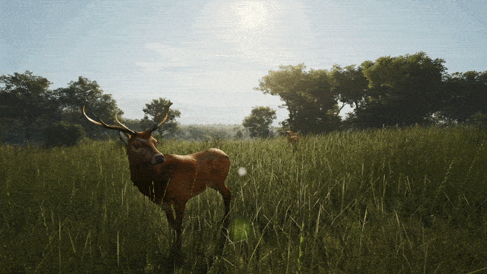
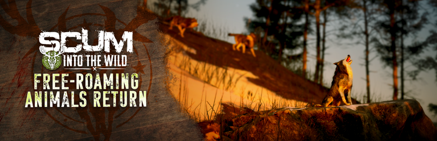
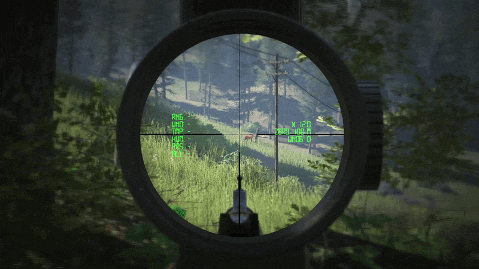
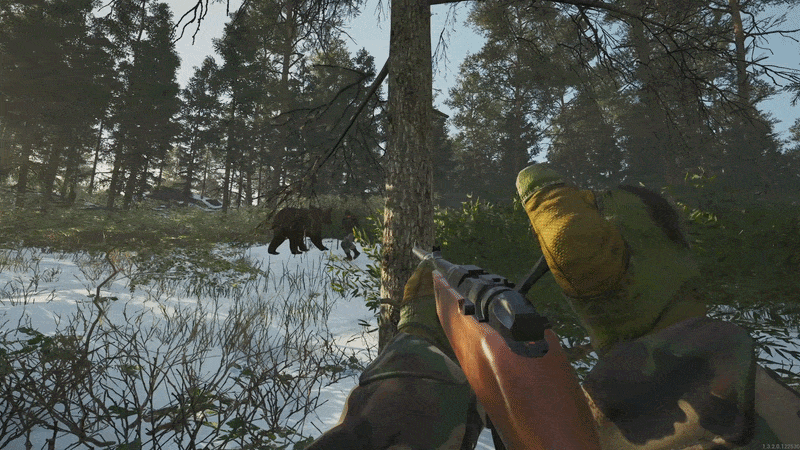
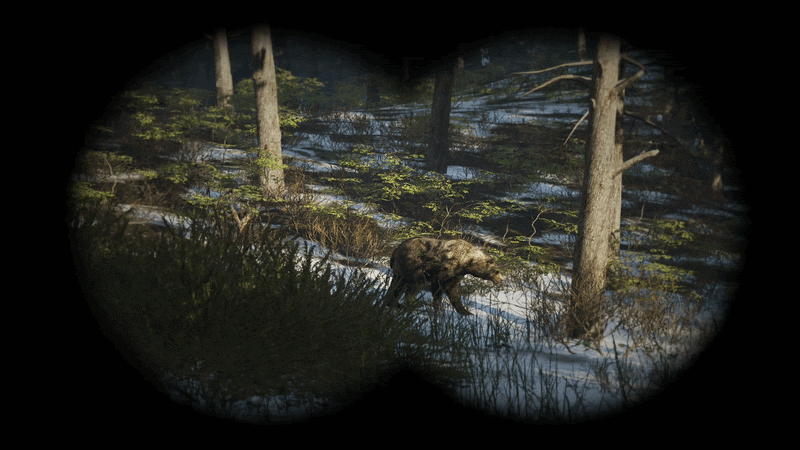
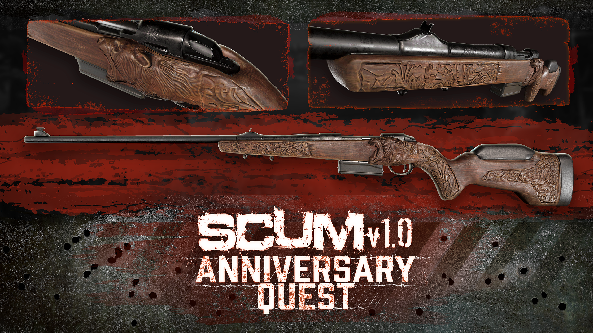
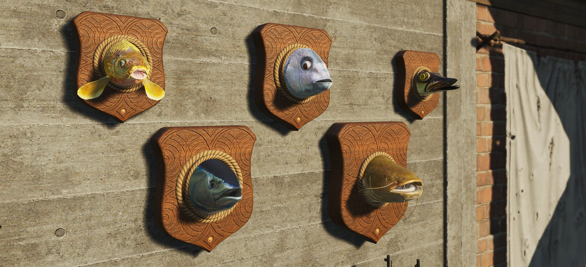
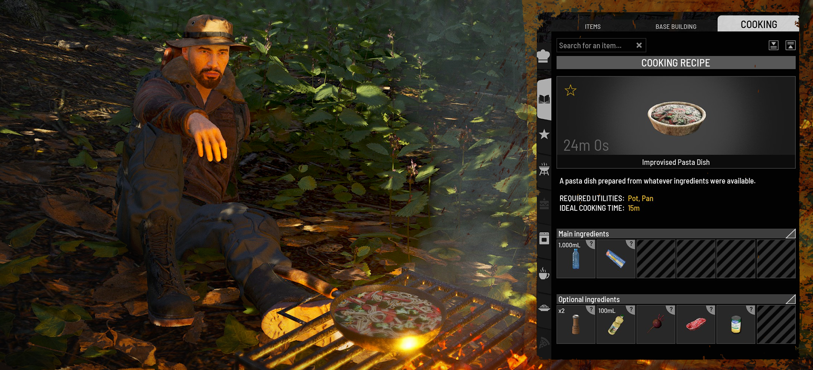
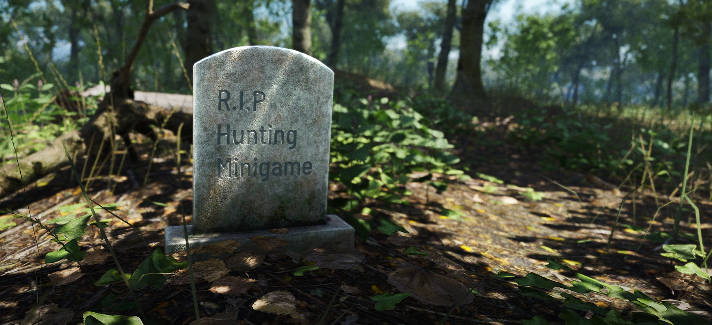

Привет, заключённые!
Свободно бродящие наземные животные вернулись!
Июньское обновление Into the Wild возвращает дикую природу на Остров: ограниченный по времени квест к годовщине SCUM 1.0, настенные трофеи из рыбы, импровизированные рецепты готовки, настраиваемые надгробия, новые параметры кастомных серверов, исправления и другие улучшения по отзывам игроков.
Dev Diary: свободно бродящие животные
Чтобы глубже понять работу над системой наземной дикой природы, посмотрите видеодневник разработчиков — он вышел вместе с обновлением:
Открыть на YouTube, если плеер не загружается
Как и в превью июньского обновления, в этом патче на официальных серверах прошёл частичный вайп.
Сохраняются: прогресс персонажа, золото и базовая стартовая экипировка.
Сброшены: транспорт, базы и все остальные предметы на официальных серверах.
Мы понимаем, что вайп посреди сезона неудобен, и сожалеем о последствиях для затронутых игроков. В дальнейшем планируем привязывать запланированные вайпы к началу сезона, чтобы ожидания по крупным сбросам были понятнее.
С возвращением свободно бродящих животных дикая природа снова — часть мира вокруг вас, а не отдельный «режим охоты».
Это не просто включение старой системы. Животных убрали из‑за производительности, поэтому возврат потребовал перестройки системы дикой природы под современный SCUM.
Теперь животные бродят по миру, а не появляются только в отдельном потоке охоты. Мини-игра охоты удалена — вы ищете, выслеживаете и охотитесь на животных прямо в мире.

В новой системе дикая природа зависит от места, обзора и того, что происходит вокруг: популяции по биомам, время суток, дистанция до игрока, видимость и ИИ животных с уровнем детализации (LoD).
Не каждое животное должно постоянно работать в полной симуляции. В зависимости от дистанции, видимости и активности игроков они переключаются между облегчённым и полным состоянием. Охота может начаться с движения на дальнем хребте, продолжиться по мере сближения и развиваться естественно — а не только когда зверь уже рядом.

Дикая природа по всему Острову
Спавн животных по биомам
Теперь наземные животные появляются через популяции, привязанные к биомам. Горы, леса, поля и другие зоны поддерживают разный набор зверей — у каждой части Острова свой «профиль» фауны.
Популяции меняются со временем
Популяции обновляются в течение игрового дня; время суток тоже влияет на спавн. Мир естественнее реагирует на охоту, замену и смещение животных внутри биома. Тихая зона утром может ожить к вечеру.
Животные существуют за пределами вашей дистанции
Новая система LoD удерживает дикую природу на Острове без постоянной полной нагрузки на сервер. Звери остаются в мире вдали или вне поля зрения, а при обнаружении, приближении или проходе через зону переходят в полностью активное состояние.

Охота в открытом мире
Разведка — часть охоты
Животное включается в охоту, когда вы замечаете его на дистанции при прямой видимости; увеличение прицела позволяет делать это издалека. Бинокли и оружие с оптикой получили более явную роль — есть смысл осматривать гребни, опушки и открытые участки до выхода на дистанцию. Используйте растительность и линию обзора для планирования подхода.
Хищники делят территорию
Из‑за популяций по биомам добыча и хищники могут оказаться в одних зонах. Разведывайте местность и следите, кто ещё рядом. Медведь за кромкой леса может быстро закончить охоту.
Туши привлекают хищников
Оставленная туша может притянуть ближайших хищников. Каждое убийство — шанс или проблема, если задержаться слишком долго.

Развитие системы свободного перемещения
Кормушки с приманкой и популяции
Кормушки (Bait Feeder) обновлены под новую систему популяций: привлекают существующих зверей поблизости или спавнят подходящее животное, если рядом никого нет.
ИИ животных на Behavior Trees
ИИ переведён на Behavior Trees в Unreal — прочнее база для поведения, настройки встреч и разнообразных угроз в будущих патчах.
Сейчас фокус на наземных животных
Обновление в первую очередь про наземных зверей: выслеживание, охота, хищники и туши в открытом мире. Куклы, NPC, птицы и прочий спавн — отдельные системы, но эта работа задаёт фундамент для дальнейших улучшений.

Спасибо участникам Public Alpha
Спасибо всем, кто участвовал в публичной альфе свободно бродящих животных. Ваши отзывы помогли проверить систему на реальных серверах, найти краевые случаи и донастроить спавн, движение, бегство, смерть и взаимодействие с миром.
Это важный фундамент дикой природы в SCUM. По мере того как игроки осваивают систему, мы продолжим следить за поведением в лайве и улучшать ИИ.

Квест годовщины SCUM 1.0
Охотник оставил след по всему Острову. Пройдите его, выживите — и получите рецепт эксклюзивного скина оружия Carbon Hunter Ironpaw.
Квест ограничен по времени — до 31 июля. Начать можно у торговца-охотника. Предыдущий прогресс квестов не нужен — все заключённые могут стартовать сразу.
С возвращением свободно бродящих животных квест даёт ещё один повод уйти в дикую природу, собрать страницы дневника и доказать себя в новой охоте.
После разблокировки Ironpaw крафтится из Carbon Hunter и ящика с инструментами — как другие варианты скинов оружия.
Настенные трофеи из рыбы
Редкую трофейную рыбу можно поймать на отдельных точках. Карп, тунец, сом, щука и дентекс превращаются в декоративные трофеи для базы.

Трофейная рыба отделена от обычной. Пойманную можно разделать на голову, из которой при помощи деревянной доски и острого инструмента делается настенный трофей.
Повесьте на стену — пусть отряд поверит вашим рыбацким историям.
Импровизированные рецепты готовки
Добавлены первые импровизированные рецепты — проще превратить базовые ингредиенты в готовое блюдо.
Теперь можно приготовить:
- Импровизированная паста
- Импровизированный рис
- Импровизированный суп
- Импровизированное рагу

В отличие от многих рецептов, импровизированные доступны по умолчанию и не требуют кулинарной книги. Нужны простые базовые ингредиенты, плюс опциональные для улучшения блюда при наличии запасов.
Качественные ингредиенты по-прежнему помогают, но теперь можно сварить что-то полезное без длинного точного списка.
Надгробия
Игроки просили больше способов отмечать важные места, в том числе память об участниках сообщества. Добавлено крафтуемое надгробие с пользовательским текстом.
Память, предупреждение, угроза или то, за что заслужил напарник. Старайтесь не ошибаться в орфографии.
Крафт по чертежу: камни и любой молоток. После установки удерживайте F, чтобы вписать текст на камне.

Ставить можно там, где поддерживается чертёж, но надгробие нужно обслуживать. По умолчанию без ухода оно разрушается через 30 дней. На официальных серверах лимит — 3 на отряд (владельцы серверов могут задать от 0 до 100).
Новые DLC-паки
Вместе с июньским обновлением вышли два опциональных DLC в тематике Into the Wild. Они отделены от бесплатного контента патча.
Specialist Archer Pack
Снаряжение специалиста в стиле змеиной кожи, амулеты, эмоции и камуфляж.
Открыть в Steam →Настройки кастомных серверов
Новые параметры для свободно бродящих животных, рыбалки, радиации, владения флагами и надгробий. Удалены старые настройки охоты, не используемые новой системой. Часть настроек транспорта объединена с общими лимитами.
Свободно бродящие животные
scum.AreAnimalsAllowedInWorld=True
Включает или отключает свободно бродящих животных в мире.
scum.AnimalGlobalDensityMultiplier=1.000000
Глобальный множитель плотности животных. По умолчанию: 1 · Мин: 0 · Макс: 25
scum.MaxNonVirtualAnimalsInWorld=800
Максимум «реальных» акторов животных одновременно. По умолчанию: 800 · Мин: 0 · Макс: 2500
Доля каждого вида в биомах, где он разрешён. По умолчанию: 1 · Мин: 0 · Макс: 100
Пример: в биоме с медведями и козами увеличение множителя медведей или снижение коз делает медведей чаще.
scum.BearPrevalenceMultiplier— медведиscum.BoarPrevalenceMultiplier— кабаныscum.ChickenPrevalenceMultiplier— курыscum.DeerPrevalenceMultiplier— олениscum.DonkeyPrevalenceMultiplier— ослыscum.GoatPrevalenceMultiplier— козыscum.HorsePrevalenceMultiplier— лошадиscum.RabbitPrevalenceMultiplier— кроликиscum.WolfPrevalenceMultiplier— волки
Рыбалка
scum.FishingHighActivityZoneAmount=-1.000000
Число «горячих» точек рыбалки. По умолчанию 10% точек всегда активны. Мин: 0% · Макс: 100%
Радиация
scum.RadiationEnabled=True
Включает или отключает радиацию в мире.
Владение флагами
scum.NumberOfAllowedFlagsPerPlayer=10
Сколько флагов может иметь заключённый. Нужен scum.AllowMultipleFlagsPerPlayer. По умолчанию: 10 · Мин: 1 · Макс: 30
Надгробия
scum.TombstoneMaxAmountPerSquad
Лимит надгробий на отряд. По умолчанию: 3 · Мин: 0 · Макс: 100
Объединённые настройки транспорта
Отдельные MaxFunctionalAmount для ряда транспорта убраны и сведены к общим лимитам:
scum.KingletDusterMaxFunctionalAmount · scum.MotorboatMaxFunctionalAmount · scum.WheelbarrowMaxFunctionalAmount · scum.BicycleMaxFunctionalAmount · scum.SUPMaxFunctionalAmount · scum.KingletMarinerMaxFunctionalAmount · scum.DinghyMaxFunctionalAmount
Удалённые настройки
Больше недоступны (многие относились к старой системе охоты):
scum.PuppetLimpingEnabled (заменено порогом здоровья для хромоты кукол = 0), scum.ArmedNPCLimpingEnabled, scum.MaxAllowedAnimals, scum.MaxAllowedHunts, scum.AnimalWorldEncounterSpawnWeightMultiplier, все HuntTriggerChanceOverride_*, scum.HuntFailureTime, scum.HuntFailureDistance, scum.NPCWorldEncounterSpawnWeightMultiplier, scum.MasterServerEndpoints
Исправления
Вылеты (Crashes)
- Вылет при открытии радиального меню сразу после перезахода.
- Клиентский вылет при смене скина или разрушении элементов базы Woodland.
- Клиентский вылет при открытии консоли или чата в режиме дрона.
Эксплойты
- Несколько эксплойтов с часовыми (нежелательный фарм/лут).
- Фарм медведей через кормушку с приманкой.
- Бесконечные патроны: продажа коробки 1/30 торговцу без такой коробки в наличии и покупка обратно 30/30.
- Уничтожение транспорта в защищённых зонах через гранату с выдернутой чекой на земле.
Приватные серверы
- Игроки не могли подключиться из‑за ICMP-проверок — исправлено; достаточно стандартного проброса портов.
Охота и готовка
- Индикатор топлива у коптилен и других объектов с огнём.
- Фрукты/семена в кормушке становились «вечными» и курили бесконечно.
- Козы не оставляли следов.
- Рога давали только самцы оленей, не самки.
- RPG и гранатомёты корректно влияют на качество добычи с животных.
- Убран лишний «Поиск» у убитых огнемётом (нет снарядов для извлечения).
- Огнемёт, транспорт и турели больше не дают 100% качество мяса/шкуры.
- Копчёное мясо не пропадает из коптильни после выхода в меню (Sandbox).
- Исправлены ингредиенты горячего шоколада и работа кормушек/приманок (в т.ч. под водой, в городах, в пещерах).
- Деградация лута от пуль зависит от пробития снаряда.
Квесты и задания
- Задание с кормушками возвращено и адаптировано под новую систему животных.
- Квесты показываются как обучающие шаги — виден текущий этап, следующий открывается после выполнения.
- Исправлены подзадачи охоты (кроличий корм, зона торговца), переименование туториала, отказ от квеста, сброс лимитов покупок у торговца.
Рыбалка и фермерство
- Полив растений в мультиплеере, таймер урожая, UI холода при высокой температуре.
- Поломка удочки в мини-игре, полив без эффекта, блокировка низкорослых растений ветками деревьев.
- Красная наживка Boilies в модели и инвентаре.
Оружие
- Краска для обвесов оружия.
- Мерцание оптики, обрезанные деления PU на M1891 и др., копьё Wushu, стрелы для других игроков.
- Метательные ножи залипают в цели; единообразное именование .30-06.
Строительство базы
- Флаги отряда поверх стоек/ламп/трофеев, лестницы и двери, люстры Woodland/Improvised.
- Декоративный камин в Woodland Furniture Pack, лог разрушений, переводы CN, улучшенные меши размещения.
Торговцы
- Единое имя «Охотник», названия гилли, корзина охотника, иконки перчаток/MRE/рубашки, запятая в economy.json.
Интерфейс
- Иконки в быстром доступе, перекрытие рецептов, курица с «жидкостью», размытая куртка, жидкости в Sandbox.
- Дубли «Кости» в супе, перец в овощах на гриле, чат и поломка оружия.
Анимации
- Кормушка от первого лица, хват ножа и арбалета, бутылки при питье.
Звук
- Эффект разрушения базы, шаги по пням, гул ветряков, субтитры при нулевой громкости голоса.
Графика
- Цвет пролитой жидкости, отражения океана, пост-эффекты, свечение стекла и жидкостей в темноте.
Дизайн уровней
- Дождь в бункерах B0/D4, река C0, застревания в Grotto охотника, десятки мелких правок по карте.
Прочее
- Краска сундуков вне зоны флага, труп в Sandbox, камера при столкновении с животным в транспорте.
- Фонари без батареек, мугшот персонажа, позиция на крыше ТС, Snow Deluxe Hoodie, металлоискатель в кобуре.
- Исчезающие трупы на экране респавна, облучение напитков, клип одежды на теле 8/5/5, навигация NPC в аэропорту.
Известные проблемы
Мы продолжаем отслеживать и донастраивать после релиза:
- Слишком резкие повороты крупных животных в некоторых ситуациях.
- Следы на твёрдых поверхностях, включая бетонные дороги.
- Не всегда ожидаемый урон от огнестрела и хедшотов.
- Животные в прицеле иногда остаются в дальнем LoD.
- Текст на надгробиях может обрезаться или переноситься криво.
- Иконки предметов в отдельных чертежах/квестах.
- Краска/обвесы в редких случаях.
- Предметы в колчанах/кобурах невидимы после снятия с трупа в мультиплеере (помогает релог).
На этом июньское обновление!
Into the Wild продолжится в июле — больше поводов углубиться в Остров.
Спасибо, что играете, делитесь отзывами и остаётесь с нами. Увидимся на Острове!